Gerencia ve todo el negocio, aprueba lo que los demás puestos piden (precios, diferencias, pagos del portal, solicitudes), configura las reglas del sistema y revisa la auditoría. Es el único puesto que cambia las reglas de pago de nómina, los bonos y el PIN de gerencia.
Gerencia también puede entrar a las pantallas de los otros puestos. Para cada puesto hay un manual aparte.
Mi día en 5 pasos
Entra al sistema y elige Gerencia.
Mira el Resumen y la tarjeta Requiere atención.
En Por aprobar, responde Precios por aprobar, Solicitudes, Diferencias y Pagos del portal.
Mira Producción, Ventas y Administración en el Resumen.
De vez en cuando, revisa la Auditoría.
Cómo entro y elijo mi puesto
Abre el sistema.
Pulsa el botón Gerencia.
Se abre el Resumen.
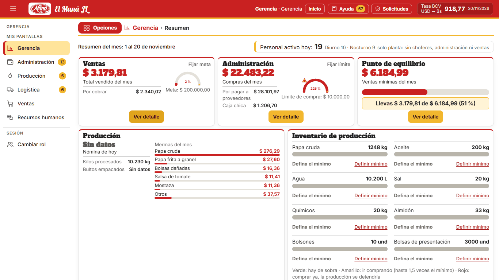
Resumen de Gerencia
Cómo apruebo los precios
Pulsa Opciones, elige Por aprobar y abre la pestaña Precios.
Revisa cada cambio.
Pulsa Aprobar o Rechazar.
Si quieres, escribe un motivo.
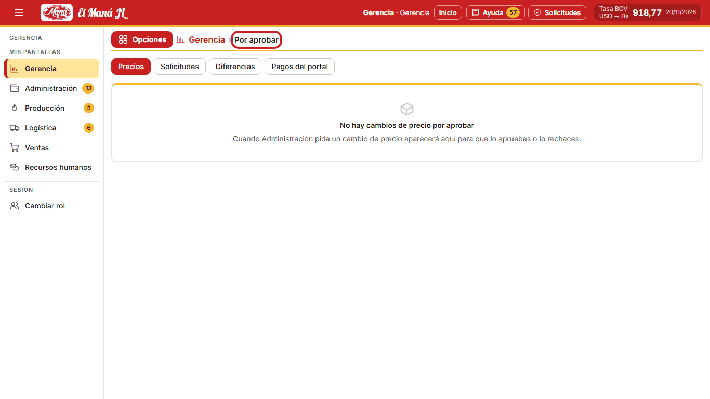
Precios por aprobar
Un precio nuevo solo vale cuando Gerencia lo aprueba.
Cómo respondo las solicitudes de los puestos
Pulsa Opciones, elige Por aprobar y abre la pestaña Solicitudes.
En cada solicitud pulsa Aprobar (puedes dejar un comentario) o Rechazar (el motivo es obligatorio).
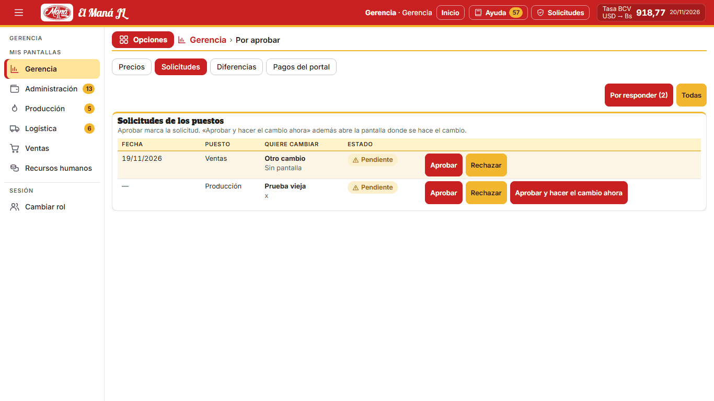
Solicitudes
Cómo resuelvo las diferencias y los pagos del portal
Pulsa Opciones, elige Por aprobar y abre la pestaña Diferencias.
Revisa cada diferencia y pulsa Aprobar o Rechazar (para rechazar, escribe el motivo).
Abre la pestaña Pagos del portal.
En cada pago pulsa Confirmar y aplicar o Rechazar.
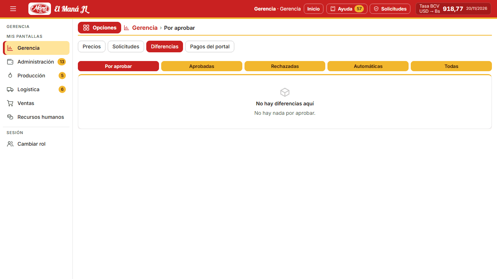
Diferencias
Si la fecha del pago es anterior, el sistema pide el PIN de gerencia.
Cómo configuro el sistema desde cero
Los bancos
Pulsa Opciones, elige Ajustes y abre la pestaña Bancos.
Pulsa Agregar banco.
Escribe el nombre del banco, la moneda, el número de cuenta y el titular.
Escribe también el teléfono (Pago Móvil), la cédula y el RIF.
Pulsa Guardar.
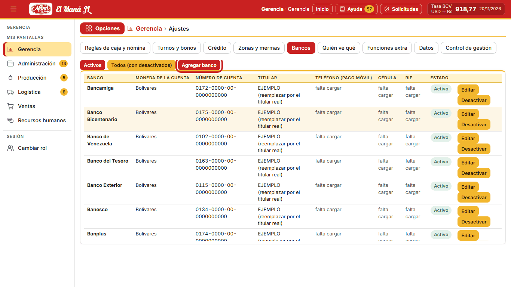
Bancos de la empresa
La tasa del dólar no se escribe: se lee sola del BCV.
Los horarios, las reglas de pago y el bono
Pulsa Opciones, elige Ajustes y abre la pestaña Turnos y bonos.
En Horario por turno, pon cuándo entran y salen el Diurno y el Nocturno.
En Reglas de pago de nómina, pon la jornada completa, el recargo de hora extra (%) y las deducciones de ley (%).
En Bono de producción, elige Por kilo o Monto fijo y la meta de kilos por turno.
Pulsa Guardar parámetros.
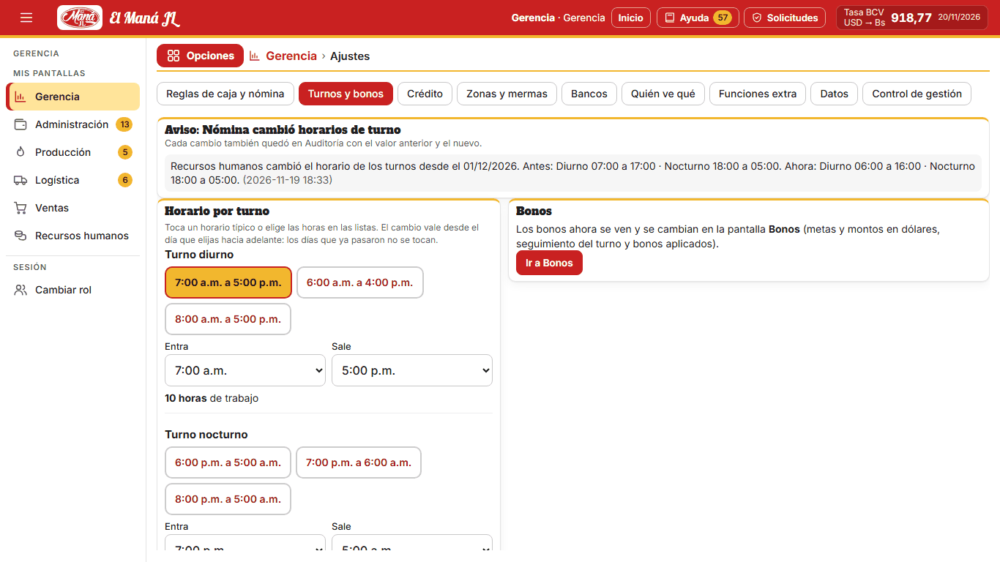
Turnos y bonos
El PIN de gerencia
Pulsa Opciones, elige Ventas, Clientes y catálogo y abre la pestaña Ajustes.
En PIN de gerencia, escribe el PIN (de 4 a 12 números) y pulsa Crear PIN (si ya hay uno, el botón dice Cambiar PIN).
Si quieres, llena el Membrete de los documentos y pulsa Guardar ajustes.
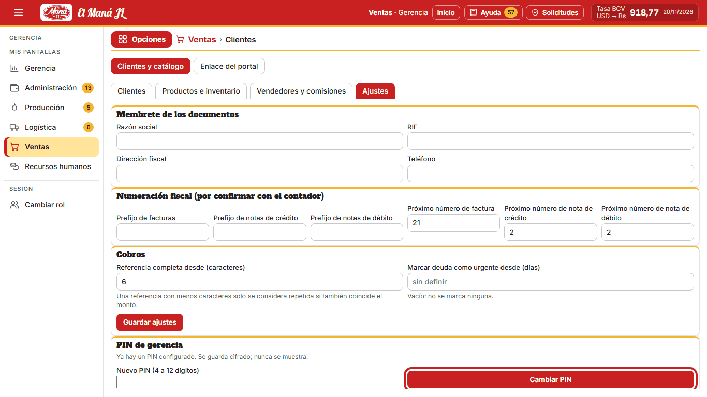
PIN de gerencia
El PIN se pide para anotar un pago con fecha pasada y para perdonar mora.
Las reglas de caja y nómina
Pulsa Opciones, elige Ajustes y abre la pestaña Reglas de caja y nómina.
Revisa el Fondo fijo ($), el Umbral de compra de contado ($), Reponer cuando quede menos de (%) y la Tolerancia de peso en recepción (%).
Revisa los préstamos: días de entrega, tope por empleado ($) y cuotas máximas.
Pulsa Guardar políticas.
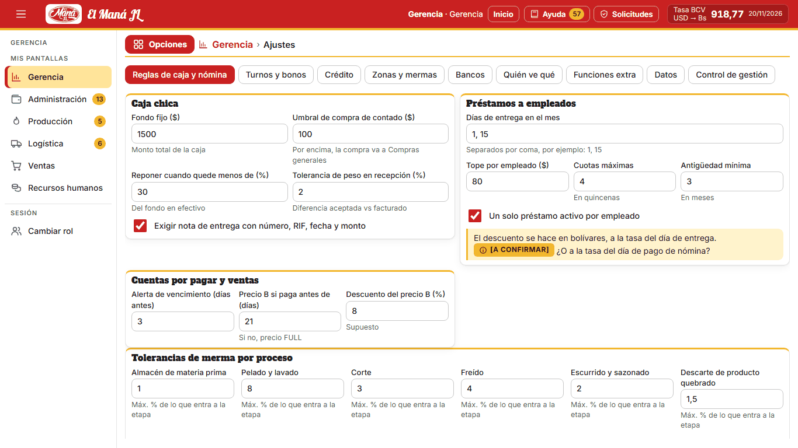
Reglas de caja y nómina
Cómo cargo la información base
Productos: en Ventas, Clientes y catálogo, abre Productos e inventario y pulsa Producto nuevo. Escribe SKU, nombre, gramaje, categoría (Papas o Salsas) e IVA (%) y pulsa Guardar.
Clientes: en Ventas, Clientes y catálogo, pestaña Clientes, pulsa Cliente nuevo.
Personas: entra como Recursos humanos, abre Personas y pulsa Agregar persona.
Proveedores: en Administración, Compras, abre Proveedores y pulsa Nuevo proveedor.
Vehículos: en Administración, abre Flota y pulsa Agregar vehículo.
Conteo inicial de producto terminado: pulsa Cargar el conteo inicial, llena el conteo y pulsa Guardar el conteo. Solo se hace una vez.
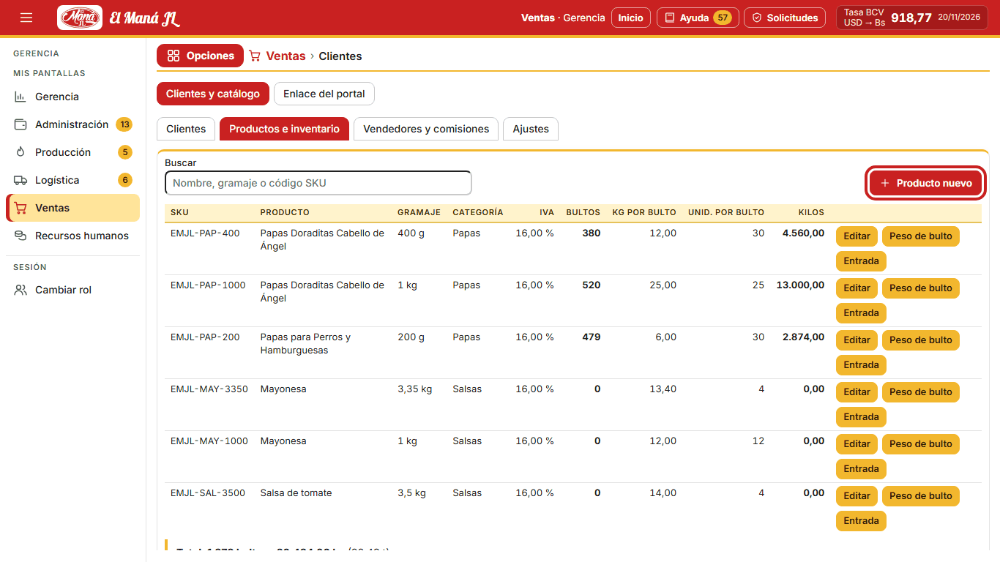
Producto nuevo
Cómo defino los mínimos de inventario
En el Resumen, mira la tarjeta Inventario de producción.
Pulsa Definir mínimo (o Cambiar mínimo) en cada insumo.
Escribe cuánto es lo mínimo.
Pulsa Cargar para los Kilos de papa por bolsón.
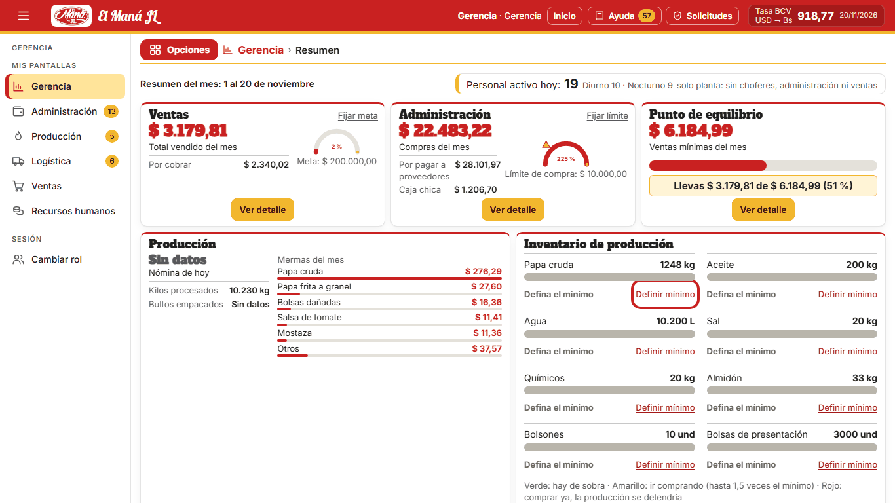
Inventario de producción con barras
Cómo reviso la auditoría y los reportes
Pulsa Opciones y elige Auditoría.
Consulta lo que se hizo en el sistema. Solo se mira: no se puede cambiar.
Si quieres guardarla, pulsa Descargar CSV.
Pulsa Opciones y elige Reportes para ver los Cambios en existencias y las Solicitudes de compra.
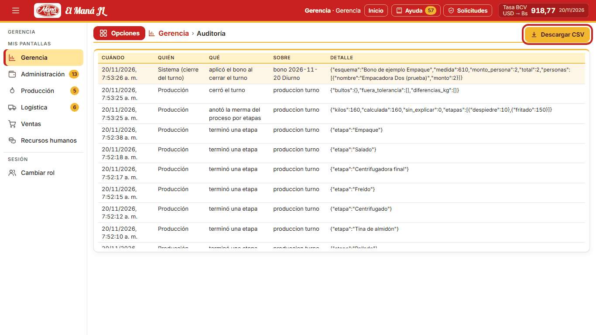
Auditoría
Cómo decido quién ve qué
Pulsa Opciones, elige Ajustes y abre la pestaña Quién ve qué.
Revisa qué puede abrir cada puesto.
En la pestaña Funciones extra puedes darle a un puesto una función más.
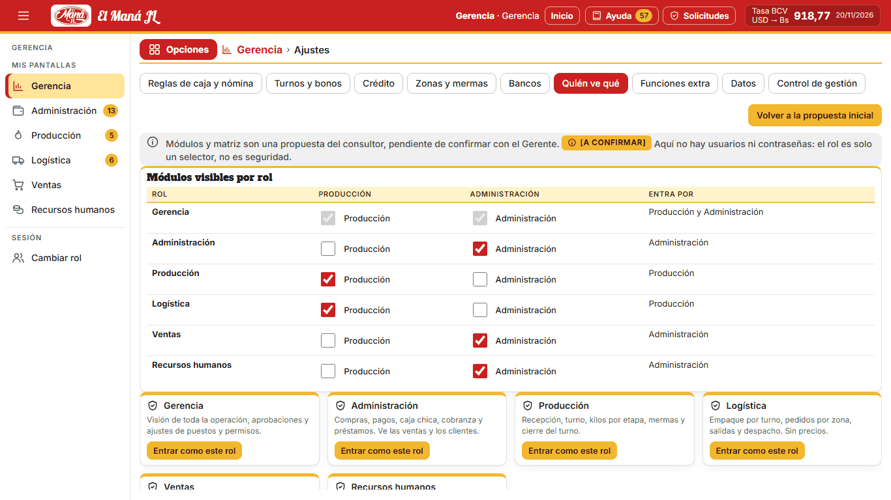
Quién ve qué
Los manuales de los demás puestos
Para ver cómo trabaja cada puesto, abre Ayuda y entra en la pestaña de manuales. Ahí están los seis manuales: Gerencia, Administración, Producción, Logística, Ventas y Recursos humanos.
Si algo sale mal
Anulé un cobro mal puesto
Entra en Administración, Cobranza, pestaña Cobros hechos, y pulsa Anular en la fila.
Escribe el Motivo de la anulación.
El cobro no se borra: queda marcado como anulado.
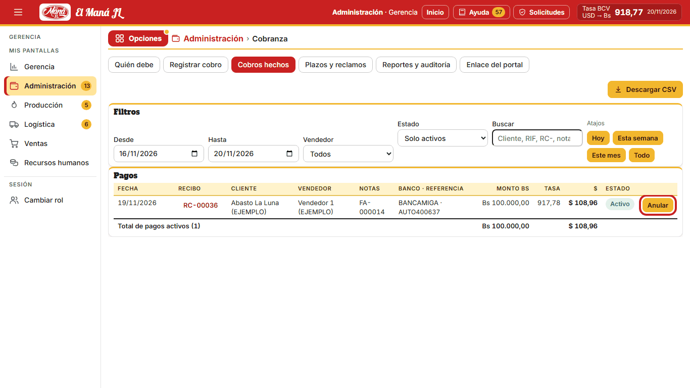
Anular un cobro
Corregir la merma de un turno ya cerrado
Solo Gerencia puede hacerlo, con una nota.
Revisa el Resumen de Producción: la diferencia aparece como «Sin explicar».
Un puesto pide algo que no puede cambiar
Aparece en Solicitudes (en Por aprobar).
Pulsa Aprobar o Rechazar.
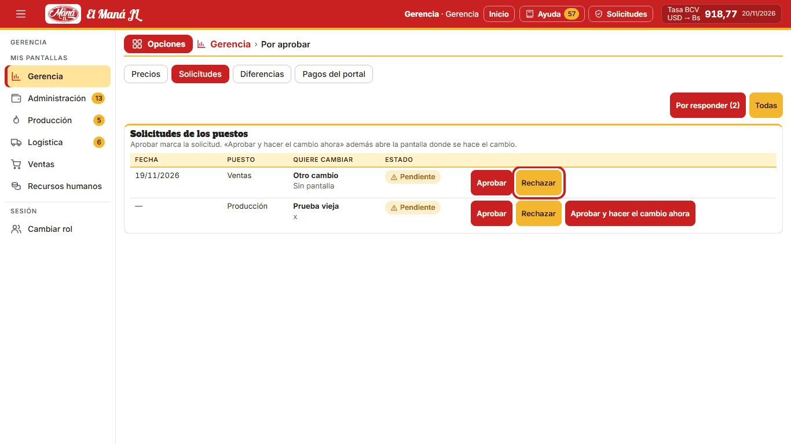
Solicitudes de los puestos
Falta el motivo de merma «Agua evaporada»
Pulsa Opciones, elige Ajustes y abre la pestaña Zonas y mermas (o Motivos de merma).